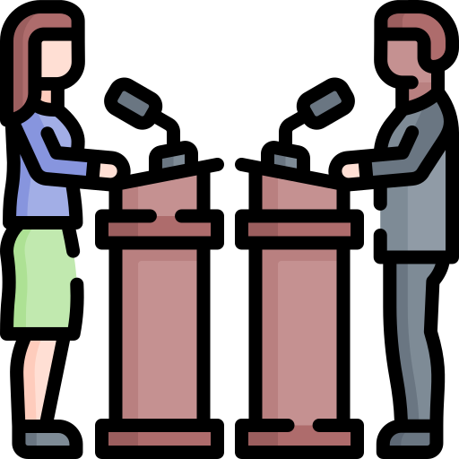
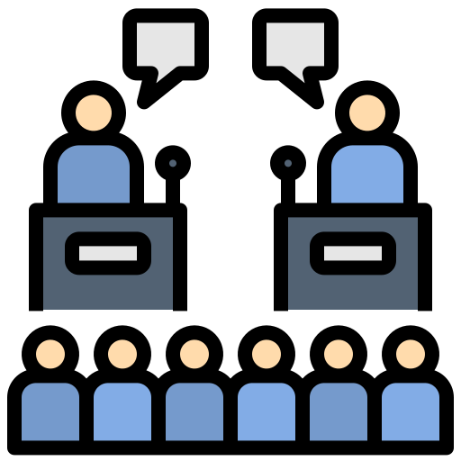

El debate
¿Qué es el debate?
El debate ayuda a analizar la información antes de aceptarla. Aprendes a preguntarte si algo es verdadero, a comparar ideas y a no creer todo sin pensar. Te vuelve una persona más reflexiva y menos manipulable.
¿Para qué sirve?
Desarrollar el pensamiento crítico
El debate ayuda a desarrollar el pensamiento crítico al fomentar el análisis y la evaluación de ideas y argumentos.
Mejorar la comunicación
Al debatir, practicas cómo expresarte de forma clara y ordenada. Aprendes a hablar con seguridad, usar palabras adecuadas y explicar mejor tus ideas para que otros te entiendan.
Aprender a escuchar a otros
No solo se trata de hablar, también de prestar atención a lo que dicen los demás. Esto te ayuda a respetar opiniones diferentes y a entender otros puntos de vista, incluso si no estás de acuerdo.
Defender ideas con argumentos
En un debate no vale decir “porque sí”. Aprendes a dar razones, ejemplos y pruebas para apoyar lo que dices, lo que hace tus ideas más fuertes y convincentes.
Participantes en un debate
Moderador
El moderador es la persona encargada de guiar el debate, asegurando que todos los participantes tengan la oportunidad de expresar sus opiniones y que se respeten las reglas del debate.

Participante
Los participantes son aquellos que exponen sus puntos de vista y argumentos sobre el tema en discusión. Pueden ser a favor o en contra del mismo.

Audiencia
La audiencia es el grupo de personas que escucha el debate. Puede hacer preguntas o comentarios al final del mismo.
Estructura del debate
1. Introducción
Se presenta el tema y las reglas
2. Exposición de ideas
Cada participante da su opinión
3. Argumentación
Se explican razones y ejemplos
4. Refutación
Se responden las ideas de otros
5. Conclusión
Se resumen las ideas principales
Reglas del debate
1. Respetar a los demás participantes
2. Escuchar atentamente antes de responder
3. Apoyar las opiniones con argumentos y evidencia
4. Evitar interrupciones innecesarias
Tipos de debate
Debate informativo
Debate persuasivo
Debate competitivo
Ejemplo de debate
A continuación, se muestra un ejemplo de un debate sobre el tema "Deberes que mandan en las escuelas"